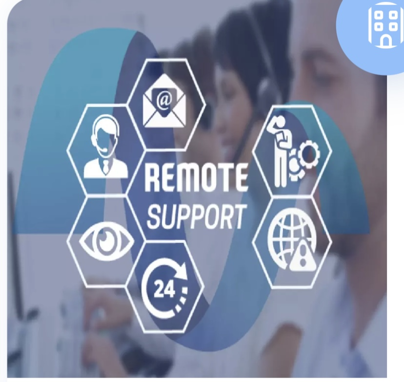

(Elevate Your IT Infrastructure with L.P International CO. LTD
We deliver tailored IT solutions for businesses in Japan and beyond,
with expert bilingual engineers specializing in Data Center management,
Network maintenance, End User Support, and IT maintenance.)
L.P International CO. LTD. で IT インフラストラクチャを向上しましょう。
当社は、データ センター管理、ネットワーク メンテナンス、エンド ユーザー サポート、
IT メンテナンスを専門とするバイリンガルのエンジニアを擁し、
日本および海外の企業向けにカスタマイズされた
IT ソリューションを提供します。
ABOUT US
(Mir Mohammad Naim) ミル モハマッド ナイム
(Managing Director, LP.INTERNATIONAL COMPANY LIMITED)
取締役社長,
エルピーインターナショナル株式会社
(L.P International CO. LTD is an IT service provider company in Japan,
offering an extensive spectrum of IT solutions, services, and support to both
local and foreign firms. Our clients consist mainly of global IT service
providers seeking local skilled engineers to fulfill their tasks.
Supported by our bilingual IT engineers, our Remote Hand Engineer service
handles any issues and tasks related to Data Center, Network, End User
Support, and IT maintenance throughout Japan. Our mission is to deliver
exceptional IT services that drive business growth, enhance operational
efficiency, and ensure the highest level of customer satisfaction.
We strive to provide our clients with the tools and support they
need to navigate the digital landscape successfully.)>
L.P International CO. LTD は、日本に拠点を置く IT サービス プロバイダー企業で
、国内外の企業に幅広い IT ソリューション、サービス、サポートを提供しています。
当社のクライアントは主に、
タスクを遂行するために地元の熟練エンジニアを求めているグローバル
IT サービス プロバイダーです。
バイリンガルの IT エンジニアがサポートする当社のリモート ハンド エンジニア サービスは、
日本全国のデータ センター、ネットワーク、エンド ユーザー サポート、
IT メンテナンスに関するあらゆる問題やタスクに対応します。当社の使命は、
ビジネスの成長を促進し、運用効率を高め、最高レベルの顧客満足度を保証する優れた
IT サービスを提供することです。当社は、お客様がデジタル環境をうま
く乗り切るために必要なツールとサポートを提供するよう努めています。
(Our skilled engineers respond to and support clients in the installation,
maintenance, and troubleshooting of various software and hardware,
all while respecting workplace culture and complying with client rule.)
(We have well-equipped software development environment
in terms of technical and professional supports.
We are prearranged to survive the client’s requirements.
the aim of our software development mission is to cover the
industry of e-business, e-government, education, finance,)
manufacturing and consulting.
With our team and experienced engineers, we provide comprehensive solutions,
from a critical IT infrastructure to round-the clock Data Center Operations and
IT hardware maintenance support.
当社のチームと経験豊富なエンジニアは、
重要な IT インフラストラクチャから 24 時間体制のデータ センター運用、IT ハードウェア保守サポートまで、
包括的なソリューションを提供します。
Network security
Network security services help protect a business'
network from unauthorized access. IT services can create and
issue access authorization to those who need it. We provide
many other services to protect your network, including Building firewalls, installing anti-virus software,
Performing regular network checkups.
ネットワーク セキュリティ サービスは、企業のネットワークを不正アクセスから保護するのに役立ちます。
IT サービスは、必要なユーザーにアクセス権限を作成し、発行することができます。ファイアウォールの構築、
ウイルス対策ソフトウェアのインストール、定期的なネットワーク チェックの実行など、
ネットワークを保護するためのその他のサービスも多数提供しています。

Remote Support
With our experienced IT Engineers, we provide technical
support remotely. For instance, if one of your devices
experiences an issue, our IT Engineers can access it
through the internet to troubleshoot and repair it.
Remote support allows them to find and repair issues more
quickly and can apply to multiple devices, including most
mobile devices.
弊社の経験豊富な IT エンジニアは、リモートでテクニカル サポートを提供します。
たとえば、お客様のデバイスの 1 つに問題が発生した場合、弊社の
IT エンジニアがインターネット経由でそのデバイスにアクセスし、トラブルシューティングと修復を行います。
リモート サポートにより、問題をより迅速に発見して修復することができ、
ほとんどのモバイル デバイスを含む複数のデバイスに適用できます。
Human Resources
L.P. International Co., Ltd., is established originally as IT
outsourcing and software development, has been expanded into a global
recruitment, outsourcing, and consulting company in supplying both skilled and
unskilled human resource from Asian countries including Bangladesh, Nepal,
India, to around the world. Recruitment and dispatching foreign workers to
Japan and overseas (Middle east, Malaysia, Singapore, Korea, Europe,
Sydney (Australia), London(UK), UAE).
LP International Co., Ltd., a leading global recruitment company specializing in the dispatch of human resources to organizations across the globe. With a focus on excellence and a passion for connecting talent with opportunity, we provide comprehensive recruitment services that empower businesses and professionals across the globe. At LP International, our mission is to bridge the gap between skilled professionals and businesses that require their expertise.
We believe that the right people are the cornerstone of success,
and we are dedicated to providing unparalleled recruitment solutions
that meet the evolving needs of our clients and candidates.
Our recruitment services are designed to identify and connect the most
qualified candidates with organizations across a wide range of industries.
We leverage our extensive network and in-depth market knowledge to provide
tailored recruitment solutions. LP International excels in the dispatch of
human resources to meet the dynamic needs of businesses globally.
Whether it's short-term projects or long-term engagements,
we provide flexible staffing solutions
tailored to your specific requirements.
At LP International Co., Ltd.,
we are proud to serve a diverse range of clients across
various industries worldwide. Our commitment to excellence
and tailored recruitment solutions has earned us the trust
of leading organizations, helping them thrive in today’s
competitive landscape. Our few clients in all over the world:
Electrical Contracting Co.,W.L.L. (Kuwait)
Al-Homound Eng & Contracting Co (Kuwait)
Buariadha Municipality (Saudi Arabia)
Ministry of Defense & Civil Aviation (Saudi Arabia)
Beesha Municipality (Saudi Arabia)
Prakaushali Parishad Ltd. (Libya)
Sri Azhimujaya Garments & Textile Sdn.Bhd. (Brunei)
Dai-Dan Co.Ltd. (Singapore)
Fujiken Pte.Ltd. (Singapore)
Nittobo Singapore Pte.Ltd. (Singapore)
Keiso Joban Construction Pte.Ltd. (Singapore)
Hundai Engineering & Construction Co.Ltd. (United Arab Emirate)
Al-Jobaer Al Hamzah Construction Co.Ltd. (United Arab Emirate)
Qatar Transport Company (Qatar)
Qatar Transport Company (Qatar)
Tokyo Plastic Industries Sdn.Bhd. (Malaysia)
Perfect Fabrication Sdn.Bhd. (Malaysia)
Golden Metal Industries Sdn.Bhd. (Malaysia)
Nikko Electronics Sdn.Bhd. (Malaysia)
Pan International Wire & Cable Sdn.Bhd. (Malaysia)
Mariyam Ahd Atiq Helal Al-Rafayee (K.S.A.)
Al-Maleki Al-Amir Nawaf Bin Abdul Aziz (K.S.A.)
Ibrahim Hasan Al-Quraishi Construction Co.Ltd. (Lebanon)
Colon Co.Ltd. (Japan)
AGEKKE Group Co.Ltd. (Japan)
Hoiye Co. Ltd (Japan)
Takeno Lake Co.Ltd. (Japan)
Career Link International Co.,Ltd. ( Japan)
OA Consulting Co.,Ltd. ( Japan)
Heisei Business Co.,Ltd. ( Japan)
Kyodo Engineering Co.,Ltd. ( Japan)
Excellent Career Co.,Ltd. ( Japan)
MOOMA Co.,Ltd. ( Japan)
Yasuda Seisakusho Co.,td. (Japan)
Kyowa Electronics Co.,Ltd. ( Japan)
Seiloo Co.,Ltd. ( Japan)
Miskul Co.,Ltd. ( Japan)
CP Links Co.,Ltd. ( Japan)
ACCRETE Co.,Ltd. ( Japan)
Daihatsu Co.Ltd.(Japan)
Doka Japan Co.Ltd. (Japan)
ALTATWEER CO LLC(Tripoli,Libya)
LACASA LIBYA(Tripoli,Libya)
CONTRACTING(Tripoli,Libya)
MITHALIYA TECHNICAL FOR
PALM CITY LTD(Tripoli,Libya)
HUSSAIN HAKKIM EST (Saudi Arabia)
Dfineline Interiors - Kuwait Salmiya
Nexus Genaral Trading Co - Kuwait Hawally
Projects House (ph) - Kuwait City
Hot Engineering & Construction Co - Kuwait City
Kcc Engineering And Contracting Company (Kuwait)
Fuji soft Co.Ltd. (Japan)
Beefnet Co.Ltd. (Japan)
Best Westrn Hotel Co.Ltd. (Japan)
Hilton Oninawa Co.Ltd. (Japan)
Nagasaki Sangyo Association(Japan)
Heisei Business Association(Japan)
Kyodo Engineering Co.Ltd. (Japan)
Qualcomm Technology Co.Ltd. (Japan)
Kyowa Logestic Co.Ltd. (Japan)
Hasunuma Nougyo Co.lTd. (Japan)
Matsumaru Eigyo Co.Ltd(Japan)
Manpoer Japan Co.Ltd. (Japan)
Konno Gumi Co.Ltd. (Japan)
Ibaraki Shokuhinkaku Co.Ltd. (Japan)
Processwork Kumamoto Association(Japan)
Qualcomm Technology Co.Ltd. (Japan)
KMS Kanagata Co.Ltd. (Japan)
Kikuchi Noen Co.Ltd. (Japan)
Moyan Curry Co.Ltd. (Japan)
Sugimoto Kougyo Co.Ltd. (Japan)
Miyamoto Kouzo Co.Ltd. (Japan)
Tokyo Plastic Industries Sdn.Bhd. (Malaysia)
Amanoya Services Malaysia Sdn.Bhd. (Malaysia)
OMRON (M) SDN.BHD (Malaysia)
ASAHIKOSEI (M) SDN.BHD(Malaysia)
KEAR KAR (M) SDN BHD (Malaysia)
Versatile Textile Mills Co.Ltd. (Mauritius)
MATSUSHITA ELECTRONICS (M) SDN.BHD (Malaysia)
KANEBO SPINING MILLS (M) SDN.BHD(Malaysia)
TAGUCHI RUBBER (M) SDN.BHD. (Malaysia)
KAWAMURA MALAYSIA SDN.BHD. (Malaysia)
KOHOKU ELECTRONICS (M) SDN.BHD. (Malaysia)
TAN BROTHER (M) SDN BHD (Malaysia)
ALUNAN WIRA SDN BHD (Malaysia)
TEONG SHENG SDN BHD(Malaysia)
KING HONG FURNITURE SDN.BHD. (Malaysia)
SHINKONG CORP.SDN.BHD. (Malaysia)
GOLDEN METAL INDUSTRIES SDN.BHD(Malaysia)
MEERZA AUN ALMUKTAREST - (Saudi Arabia)
AL SADIQ HOSPITALS-SIHAT (Saudi Arabia)
AL BASSAMEST - AL KHOBAR (Saudi Arabia)
Al-Maleki Al-Amir Nawaf Bin Abdul Aziz (K.S.A.)
Dayesh Sulaiman Abu Hadud Company (Qatar)
Naif Al-Noime Trading & Construction (Qatar)
Qatar Transport Company (Qatar)
I.C.G.Construction Company (Qatar)
Ministry of Defense & Civil Aviation
(Saudi Arabia)
Kuwait Pitchaird Co. (Kuwait)
National Group of Engineering & Construction. (Libya)
LP International is a Global IT services company since 1990 based in Japan,
dedicated to delivering innovative technology solutions and
support to businesses of all sizes. With a commitment to excellence
and a passion for technology, LP International has established itself
as a trusted partner for companies looking to enhance their
IT infrastructure, optimize their operations, and drive digital
transformation. We have established a
Specialist Divisions in Engineering & Technical,
Information Technology, Executive Search, Human Capital Solutions an
Outsourcing Software Development. Our Global Software Outsourcing
and Recruiting model makes sure we deliver maximum targeted results
to you. Technology has become indispensable in Business,
Entertainment and Education in everyday life. LP International
is ready to provide your total IT solutions. LPI has been
serving you for more than 34 years. So, with its knowledge and
experiences LPI have specialized working on software solutions, project consultancy, system integration, network solution, data entry & processing, e-business solution, outsourcing etc. We have the necessary infrastructures supporting the latest technologies to serve you with the highest quality web based product and services with a dynamic team of qualified and well experienced professionals. We can assure you that LPI can deliver you value and quality services in time.
LP International は、1990 年以来日本を拠点として、
あらゆる規模の企業に革新的なテクノロジー ソリューションとサポートを提供することに専念しているグローバル IT サービス企業です。
卓越性への取り組みとテクノロジーへの情熱により、
LP International は、IT インフラストラクチャの強化、運用の最適化、デジタル
トランスフォーメーションの推進を目指す企業の信頼できるパートナーとしての地位を確立しました。
当社は、エンジニアリングと技術、情報技術、エグゼクティブ サーチ、人材ソリューション、アウトソーシング ソフトウェア開発の専門部門を設立しました。
当社のグローバル ソフトウェア アウトソーシングおよび採用モデルにより、最大限の成果をお客様にお届けします。
テクノロジーは、日常生活におけるビジネス、エンターテイメント、教育に不可欠なものとなっています。
LP International は、総合的な IT ソリューションを提供する準備ができています。
LPI は 34 年以上にわたってお客様にサービスを提供しています。
そのため、LPI は、その知識と経験を活かして、ソフトウェア ソリューション、プロジェクト コンサルティング、システム統合、
ネットワーク ソリューション、データ入力と処理、e ビジネス ソリューション、アウトソーシングなどに特化しています。当社には、資格を持ち経験豊富な専門家のダイナミックなチームとともに、最高品質の Web ベースの製品とサービスをお客様に提供するために必要な最新テクノロジーをサポートするインフラストラクチャがあります。 LPI は価値と品質の高いサービスを時間通りに提供できることを保証します。
(Mir Mohammad Naim)
ミル モハマッド ナイム
Managing Director,
LP.INTERNATIONAL COMPANY LIMITED,JAPAN
取締役社長, エルピーインターナショナル株式会社

.jpg) (L.P International CO. LTD is an IT service provider company in Japan,
offering an extensive spectrum of IT solutions, services, and support to both
local and foreign firms. Our clients consist mainly of global IT service
providers seeking local skilled engineers to fulfill their tasks.
Supported by our bilingual IT engineers, our Remote Hand Engineer service
handles any issues and tasks related to Data Center, Network, End User
Support, and IT maintenance throughout Japan. Our mission is to deliver
exceptional IT services that drive business growth, enhance operational
efficiency, and ensure the highest level of customer satisfaction.
We strive to provide our clients with the tools and support they
need to navigate the digital landscape successfully.)>
(L.P International CO. LTD is an IT service provider company in Japan,
offering an extensive spectrum of IT solutions, services, and support to both
local and foreign firms. Our clients consist mainly of global IT service
providers seeking local skilled engineers to fulfill their tasks.
Supported by our bilingual IT engineers, our Remote Hand Engineer service
handles any issues and tasks related to Data Center, Network, End User
Support, and IT maintenance throughout Japan. Our mission is to deliver
exceptional IT services that drive business growth, enhance operational
efficiency, and ensure the highest level of customer satisfaction.
We strive to provide our clients with the tools and support they
need to navigate the digital landscape successfully.)>
.jpg)